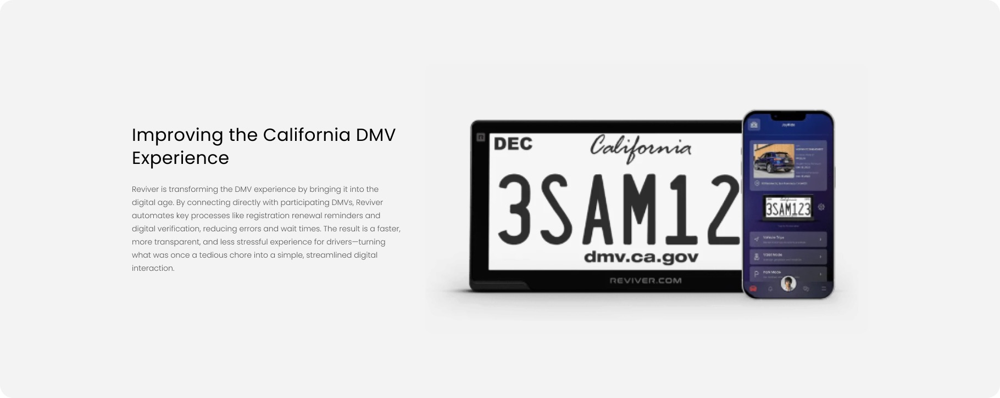
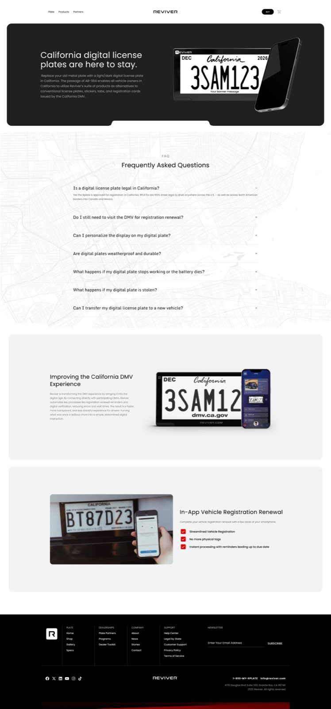
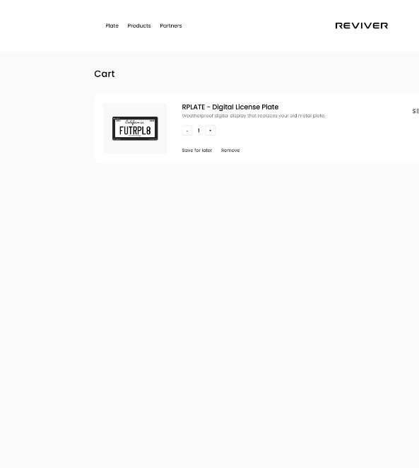
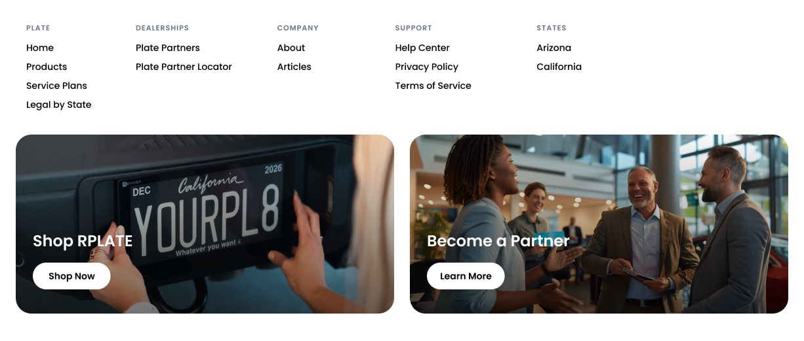
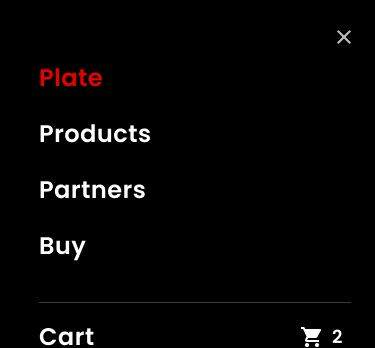

Discover
Scroll-driven homepage and RPLATE product experience that introduce the hardware and the service story.
Selected engineering work
A production headless storefront combining interactive product storytelling, Shopify commerce, existing platform identity, and AWS-backed integrations.
The challenge
Reviver’s RPLATE is a digital license plate with geographic availability constraints, service plans, and an existing customer platform. The consumer website needed to support a wide set of product and operations requirements in one coherent surface.
The central engineering challenge: connecting multiple independent systems into one coherent customer experience.
Architecture
A Next.js application sits between the browser and the commerce, identity, and cloud services that power the storefront.
Browser connects to a Next.js App Router with server-side API routes. That application connects to Shopify Storefront GraphQL for catalog, carts, and customer commerce; the Reviver Platform API for authentication and platform identity; AWS Amplify Lambda functions for protected credentials and Multipass operations; and AWS AppSync with DynamoDB for environment-scoped token storage.
Engineering deep dive
Reviver’s existing platform accounts and Shopify customer identities are separate systems. The storefront bridges them so authenticated platform customers can use Shopify commerce features without maintaining a second login mental model.
Platform authentication establishes the existing customer session. Server-side Multipass token generation then connects that identity to Shopify. After token exchange, account and order surfaces can reflect Shopify customer commerce state.
Credential isolation matters as much as the happy path: Multipass secrets and related credentials stay behind Amplify-managed secrets and Lambda functions, keeping sensitive material off the client. Server-side handling reduces exposure — it does not, by itself, make the full authentication architecture secure. Threat modeling, least privilege, and careful token lifecycle still apply.
Engineering deep dive
Shopify serves as both a commerce platform and a content source — product catalog, supported-state information, legal content, and blog posts feed the storefront.
Dynamic geographic pages, reserved-slug routing, ISR-driven sitemap updates, and legacy URL redirects keep expansion and SEO continuity manageable as markets open.
Product decision: marketing and operations can update supported content without requiring a new frontend deployment. Sitemap freshness follows a revalidation interval rather than instantaneous updates.
Product experience
The customer journey is organized around four moments — discover, qualify, convert, and support.
Scroll-driven homepage and RPLATE product experience that introduce the hardware and the service story.
State availability, service plans, and dealer discovery so customers understand eligibility before checkout.
Shopify cart and checkout for purchase flows, with a separate leasing path where applicable.
Account access, order history, and support integrations after the sale.





Production engineering
Shipping the storefront was only part of the work. Production delivery included the operational concerns that keep a commerce platform trustworthy after release.
Outcomes
Reflection
Identity and commerce stay more maintainable when their concerns remain separated — each system can evolve without collapsing the customer experience.
Credential management belongs in the architecture from the start, not as an afterthought bolted onto a feature branch. Content systems should follow business workflows: markets open, legal pages change, and operations should not wait on a frontend deploy.
Deployment reliability, performance-conscious interaction design, and post-launch maintenance — catalog correctness, redirects, third-party integrations — outlive the initial release. Those are the decisions that still matter months later.
Whether you are connecting commerce platforms, identity, or content operations — clear architecture and production discipline make the difference after launch. This is the kind of custom web development OKCoded takes on.